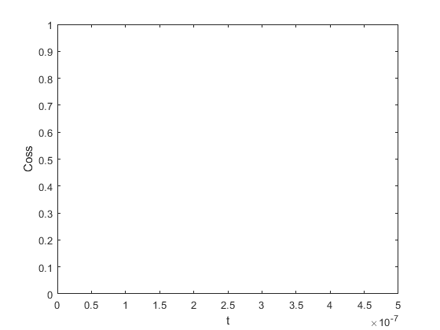
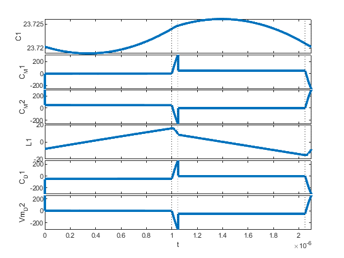
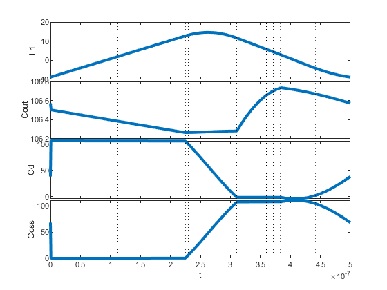
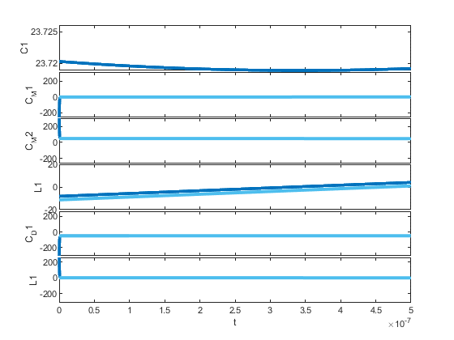

Contents
Add test circuits folder to the path
sdir = mfilename('fullpath');
sdir = sdir(1:find(sdir=='\',1,'last')-1);
addpath(sdir);
addpath([sdir '\ExampleTopologies'])
Example Underdefined PLECS File
modelfile = 'DAB_Incomplete'; PLECsModel = 'DAB_oneCap';
open_system(modelfile,'loadonly');
circuitPath = [modelfile '/' PLECsModel];
sim = SMPSim();
conv = sim.converter;
top = sim.topology;
try
top.loadCircuit(circuitPath);
catch e
disp(getReport( e, 'extended', 'hyperlinks', 'on' ) )
end
Example Steady-State Solve from PLECS circuit
modelfile = 'AsyncBoost'; PLECsModel = 'Boost_Async';
loadSimulinkOutputsToBase(modelfile,PLECsModel);
circuitPath = [modelfile '/' PLECsModel];
sim = SMPSim();
sim.initialize(circuitPath, swvec, us, ts);
sim.steadyState();
sim.plotAllStates(1)
sim.plotAllOutputs(2)
 
Example Steady-State Solve from PLECS circuit with dependent States
modelfile = 'AsyncBoost'; PLECsModel = 'Boost_Async';
loadSimulinkOutputsToBase(modelfile,PLECsModel);
circuitPath = [modelfile '/' PLECsModel];
sim = SMPSim();
sim.initialize(circuitPath, swvec, us, ts);
sim.findValidSteadyState();
sim.plotAllStates(1)
sim.plotAllOutputs(2)
1.0e+03 *
0.0020 -7.3805
1.0e+03 *
0.0030 -7.2836
1.0e+03 *
0.0040 -7.0887
1.0e+03 *
0.0050 -6.6946
1.0e+03 *
0.0060 -5.8909
1.0e+03 *
0.0070 -4.2291
1.0e+03 *
0.0080 -2.0739
1.0e+03 *
0.0090 -1.0337
10.0000 -517.3242
11.0000 -258.9707
12.0000 -129.5615
13.0000 -64.7705
14.0000 -32.3495
15.0000 -16.1321
16.0000 -8.0217
17.0000 -3.9660
18.0000 -1.9380
19.0000 -0.9240
20.0000 -0.4170
21.0000 -0.1635
22.0000 -0.0368
23.0000 -612.4529
24.0000 -543.4898
25.0000 -203.6276
26.0000 -176.1561
27.0000 -119.7575
28.0000 -94.0915
29.0000 -44.3160
30.0000 -3.7390
31.0000 -1.0845
32.0000 -0.4968
33.0000 -0.2033
34.0000 -0.0566
35.0000 -20.8449
36.0000 -10.3258
37.0000 -5.0713
38.0000 -2.4888
39.0000 -1.1994
40.0000 -0.5547
41.0000 -0.2324
42.0000 -0.0712
 